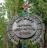
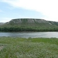

Достопримечательности по видам
Исторические / Памятники
 Когда заходит речь о Волгоградской области, в памяти невольно возникают страницы её героической истории.
В первую очередь они связаны с Великой Отечественной войной.
Нет в России, да и, пожалуй, за рубежом, ни одного грамотного человека, который не знал бы о великой битве на Волге.
Зимой 1942—1943 гг. на берегах Волги развернулась грандиозная Сталинградская битва,
завершившаяся полным разгромом гитлеровских захватчиков.
Когда заходит речь о Волгоградской области, в памяти невольно возникают страницы её героической истории.
В первую очередь они связаны с Великой Отечественной войной.
Нет в России, да и, пожалуй, за рубежом, ни одного грамотного человека, который не знал бы о великой битве на Волге.
Зимой 1942—1943 гг. на берегах Волги развернулась грандиозная Сталинградская битва,
завершившаяся полным разгромом гитлеровских захватчиков.
Ожесточенные кровопролитные бои, в которых принимали участие многочисленные войсковые соединения оставили свои следы на территории Волгоградской области. Недалеко от трассы М6 на территории Городищенского района расположены 2 уникальных памятника, посвященных Великой Отечественной войне - "Солдатское поле" и "Россошки", которые необходимо посетить каждому, чтобы отдать дань воинам погибшим защищая свою Родину.
Также, гостям Волгоградской области, путешествующим по трассе М6 можно посоветовать ознакомится с памятниками, касающимися средневекой истории, например памятник уроженцу Донской земли - знаменитому Ермаку Тимофеевичу. Или уникальный фортификационный памятник 18 века - Царицынская сторожевая линия.
Этнография / Музеи
 В волгоградской области проживает более 100 национальностей. У каждого народа есть свои праздники и обычаи, которые чаще всего представляют собой очень яркое и зрелищное событие. Этнографические достопримечательности Волгоградской области познакомят Вас с культурой, бытом, многообразием обычаев народов, проживающих на территории Волгоградской области, которая исторически сформировалась как многонациональная и закономерно стала средоточием различных национальных культур и вероисповеданий.
В числе самых интересных этнографических объектов – Музей-заповедник народной архитектуры и быта иловлинских казаков или просто «Казачий курень», расположенный в живописном уголке природы, на берегу реки Иловли, под открытым небом буквально в 100 метрах от трассы М6. Подлинные экспонаты, собранные в экспозиции, воссоздают быт казачества дореволюционного времени.
Потратив немного времени Вы сможете ознакомится с историей пересекамых поселений, посетив краеведческие музеи. Особый интерес могут представить экспонаты палеонтологии и древних захоронений найденные в г. Новоаннинскоми выставленные в местном музее.
Религиозные
Волгоградская земля богата православными монастырями и церквями. Здесь есть церкви XVIII века и древнейшие обители. С некоторыми из них Вы можете познакомится и посетить путешествуя по трассе М6.
Природные
 Волгоградская область обладает богатейшей и разнообразнийшей природой. Здесь есть буквально все: реки и озера, возвышенности и меловые горы, степи и полупустыни. Много мест, еще не охваченных процессом урбанизации и интенсивным сельскохозяйственным производством.
На территории области располагаются семь природных парков. Один из которых - "Донской" находится на территории Иловлинского района, который пересекает трасса М6. Еще один уникальный памятник природы таже находится неподалеку от нашей трассы - "Государственный ботанический памятник природы Арчединско-Донские пески".
Также не стоит забывать и живописных малых реках нашего региона, таких как Медведица, пересекающая трассу М6 в Михайловском районе.